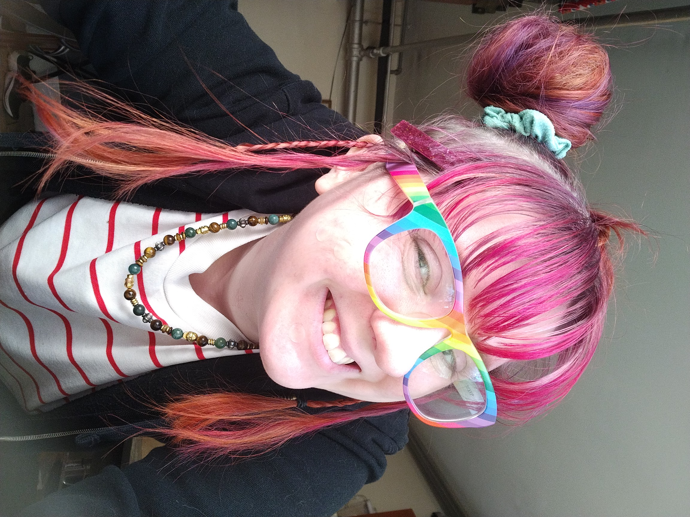

About Rose T.
Rose T. is a hands-on creative individual who finds joy in transformation — both in hair and in life. After stepping away from a stable but uninspiring job, Rose pursued beauty school with determination, passion, and a deep love for color. What began as a leap of faith has grown into a career path that blends artistry, service, and community. They currently work in a small independent salon, supporting stylists with everything from prepping formulas to creating cute Instagram posts — a task Rose genuinely enjoys and excels at. Their colleagues are glad to hand it off; Rose turns it into magic. Whether it’s mixing foils or making reels, Rose brings intention and style to each part of their day. Long term, they hope to specialize in vivid hair colors blended with natural tones, and eventually develop styling expertise for wedding events. Their ambition is rooted not just in skill, but in care — making clients feel seen, vibrant, and ready for anything. Starting beauty school was scary. Quitting a well-paying job was even scarier. But Rose calls it the best decision they’ve made — one that’s brought them confidence, growth, and a clearer sense of purpose than ever before.